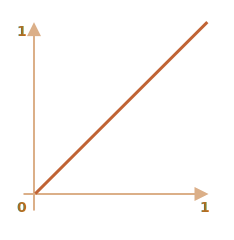

JavaScript-анимации
С помощью JavaScript-анимаций можно делать вещи, которые нельзя реализовать на CSS.
Например, движение по сложному пути с временной функцией, отличной от кривой Безье, или canvas-анимации.
С помощью JavaScript-анимаций можно делать вещи, которые нельзя реализовать на CSS.
Например, движение по сложному пути с временной функцией, отличной от кривой Безье, или canvas-анимации.
Анимация реализуется через последовательность кадров, каждый из которых немного меняет HTML/CSS-свойства.
Например, изменение style.left от 0px до 100px - двигает элемент.
И если мы будем делать это с помощью setInterval, изменяя на 2px с небольшими интервалами
времени, например, 50 раз в секунду, тогда изменения будут выглядеть плавными. Принцип такой же, как в кино:
24 кадров в секунду достаточно, чтобы создать эффект плавности.
Псевдокод мог бы выглядеть так:
let timer = setInterval(function() {
if (animation complete) clearInterval(timer);
else increase style.left by 2px;
}, 20); // Изменять на 2px каждые 20ms, это около 50 кадров в секундуБолее детальная реализация этой анимации:
let start = Date.now(); // Запомнить время начала
let timer = setInterval(function() {
// Сколько времени прошло с начала анимации?
let timePassed = Date.now() - start;
if (timePassed >= 2000) {
clearInterval(timer); // Закончить анимацию через 2 секунды
return;
}
// Отрисовать анимацию на момент timePassed, прошедший с начала анимации
draw(timePassed);
}, 20);
// В то время как timePassed идет от 0 до 2000
// left изменяет значение от 0px до 400px
function draw(timePassed) {
train.style.left = timePassed / 5 + 'px';
}Для просмотра примера кликните на него:

Теперь давайте представим, что у нас есть несколько анимаций, работающих одновременно.
Если мы запустим их независимо с помощью setInterval(..., 20), тогда браузеру будет необходимо
выполнять отрисовку гораздо чаще, чем раз в 20ms.
Это происходит из-за того, что каждая анимация имеет свое собственное время старта и «каждые 20 миллисекунд»
для разных анимаций - разные. Интервалы не выравнены и у нас будет несколько независимых срабатываний в течение
20ms.
Другими словами:
setInterval(function() {
animate1();
animate2();
animate3();
}, 20);Меньше нагружают систему, чем три независимые функции:
setInterval(animate1, 20); // Независимые анимации
setInterval(animate2, 20); // В разных местах кода
setInterval(animate3, 20);Эти независимые перерисовки лучше сгруппировать вместе, тогда они будут легче для браузера, а значит - не грузить процессор и более плавно выглядеть.
Существует еще одна вещь, про которую надо помнить: когда CPU перегружен или есть другие причины делать
перерисовку реже (например, когда вкладка браузера скрыта), нам не следует делать ее каждые 20ms.
Но как нам узнать об этом в JavaScript? Спецификация
Animation timing описывает функцию
requestAnimationFrame, которая решает все описанные проблемы и делает даже больше.
Синтаксис:
let requestId = requestAnimationFrame(callback);Такой вызов планирует запуск функции callback на ближайшее время, когда браузер сочтет возможным
осуществить анимацию.
Если в callback происходит изменение элемента, тогда оно будет сгруппировано с другими
requestAnimationFrame и CSS-анимациями. Таким образом браузер выполнит один геометрический
пересчет и отрисовку, вместо нескольких.
Значение requestId может быть использовано для отмены анимации:
// Отмена запланированного запуска callback
cancelAnimationFrame(requestId);Функция callback имеет один аргумент - время прошедшее с момента начала загрузки страницы
в миллисекундах. Это значение может быть получено с помощью вызова
performance.now().
Как правило, callback запускается очень скоро, если только не перегружен CPU или не разряжена
батарея ноутбука, или у браузера нет какой-то еще причины замедлиться.
Код ниже показывает время между первыми 10 запусками requestAnimationFrame. Обычно оно 10-20мс:
<script>let prev = performance.now(); let times = 0; requestAnimationFrame(function measure(time) { document.body.insertAdjacentHTML('beforeend', Math.floor(time - prev) + ' '); prev = time; if (times++ < 10) requestAnimationFrame(measure); });</script>
Теперь мы можем создать более сложную функции анимации с помощью requestAnimationFrame:
function animate({timing, draw, duration}) {
let start = performance.now();
requestAnimationFrame(function animate(time) {
// timeFraction изменяется от 0 до 1
let timeFraction = (time - start) / duration;
if (timeFraction > 1) timeFraction = 1;
// Вычисление текущего состояния анимации
let progress = timing(timeFraction);
draw(progress); // Отрисовать ее
if (timeFraction < 1) {
requestAnimationFrame(animate);
}
});
}Функция animate имеет три аргумента, которые описывают анимацию:
duration
Продолжительность анимации. Например, 1000.
timing(timeFraction)
Функция расчета времени, как CSS-свойство transition-timing-function, которая будет
вычислять прогресс анимации (как ось y у кривой Безье) в зависимости от прошедшего времени
(0 в начале, 1 в конце).
Например, линейная функция значит, что анимация идет с одной и той же скоростью:
function linear(timeFraction) {
return timeFraction;
}График функции:
Это как если бы в transition-timing-function передать значение linear.
Ниже будут представлены более интересные примеры.
draw(progress)
Функция отрисовки, которая получает аргументом значение прогресса анимации и отрисовывает его.
Значение progress=0 означает, что анимация находится в начале, и значение progress=1 -
в конце.
Это так функция, которая на самом деле и рисует анимацию.
Вот как она могла бы двигать элемент:
function draw(progress) {
train.style.left = progress + 'px';
}Или делать что-нибудь еще. Мы можем анимировать что угодно, как захотим.
Теперь давайте используем нашу функцию, чтобы анимировать свойство width от 5
до 100%.
Нажмите на элемент для того, чтобы посмотреть пример:
Код:
animate({
duration: 1000,
timing: function(timeFraction) {
return timeFraction;
},
draw: function(progress) {
elem.style.width = Math.max(5, progress * 100) + '%';
}
});В отличие от CSS-анимаций, можно создать любую функцию расчета времени и любую функцию отрисовки.
Функция расчета времени не будет ограничена только кривой Безье, а функция draw может менять
не только свойства, но и создавать новые элементы (например, для создания анимации фейерверка).
Мы уже рассмотрели самый простой пример линейной функции расчета времени выше.
Давайте посмотрим другие. Мы попробуем выполнить анимации с разными функциями расчета времени, чтобы посмотреть как они работают.
Если мы хотим ускорить анимацию, мы можем возвести progress в степень n.
Например, параболическая кривая:
function quad(timeFraction) {
return Math.pow(timeFraction, 2);
}График:

Посмотрим в движении (нажмите для активации):
Или кубическая кривая, или любой другой множитель n. Повышение степени увеличивает скорость
анимации.
Вот график для функции progress в степени 5:

В действии:
Функция:
function circ(timeFraction) {
return 1 - Math.sin(Math.acos(timeFraction));
}График:

Эта функция совершает «выстрел из лука». В начале «натягивается тетива», а затем «выстрел».
В отличие от предыдущей функции, теперь все зависит от дополнительного параметра x -
«коэффициента эластичности». Он определяет силу «натяжения тетивы».
Код:
function back(timeFraction, x) {
return Math.pow(timeFraction, 2) * ((x + 1) * timeFraction - x);
}График для x = 1.5:
Для анимации мы используем x с определенным значением. Пример для x со значением
1.5:
Представьте, что мы бросили мяч вниз. Он падает, ударяется о землю, подскакивает несколько раз и останавливается.
Функция bounce делает то же самое, но в обратном порядке: «отскоки» начинаются сразу. Для этого
заданы специальные коэффициенты:
function bounce(timeFraction) {
for (let a = 0, b = 1; 1; a += b, b /= 2) {
if (timeFraction >= (7 - 4 * a) / 11) {
return -Math.pow((11 - 6 * a - 11 * timeFraction) / 4, 2) + Math.pow(b, 2);
}
}
}В действии:
Еще одна «эластичная» функция, которая принимает дополнительный параметр x для
«начального отрезка».
function elastic(timeFraction, x) {
return Math.pow(2, 10 * (timeFraction - 1)) * Math.cos(20 * Math.PI * x / 3 * timeFraction);
}График для x = 1.5:
В действии со значением x = 1.5:
Итак, у нас получилась коллекция функций расчета времени. Их прямое использование называется «easyIn».
Иногда нужно показать анимацию в обратном режиме. Преобразование функции, которое дает такой эффект, называется «easyOut».
В режиме «easyOut» timing функции оборачиваются функцией timingEasyOut:
timingEasyOut(timeFraction) = 1 - timing(1 - timeFraction);Другими словами, мы имеем функцию «преобразования» - makeEasyOut, которая берет «обычную»
функцию расчета времени и возвращает обертку над ней:
// Принимает функцию расчета времени и возвращает преобразованный вариант
function makeEasyOut(timing) {
return function(timeFraction) {
return 1 - timing(1 - timeFraction);
}
}Например, мы можем взять функцию bounce описанную выше:
let bounceEasyOut = makeEasyOut(bounce);Таким образом, отскоки будут не в начале функции, а в конце. Смотрится гораздо лучше:
Ниже мы можем увидеть, как трансформации изменяют поведение функции:

Если раньше анимационный эффект, такой как отскоки, был в начале, то после трансформации он будет показан в конце.
На графике выше красным цветом обозначена обычная функция и синим - после easyOut.
Обычный скачок - объект сначала медленно скачет внизу, а затем резко подпрыгивает вверх.
Обратный easyOut - объект вначале прыгает вверх, и затем там.
Мы можем применить эффект дважды - в начале и конце анимации. Такая трансформация называется «easyInOut».
Для функции расчета времени, анимация будет вычисляться следующим образом:
if (timeFraction <= 0.5) { // Первая половина анимации
return timing(2 * timeFraction) / 2;
} else { // Вторая половина анимации
return (2 - timing(2 * (1 - timeFraction))) / 2;
}Код функции-обертки:
function makeEasyInOut(timing) {
return function(timeFraction) {
if (timeFraction <= 0.5) {
return timing(2 * timeFraction) / 2;
} else {
return (2 - timing(2 * (1 - timeFraction))) / 2;
}
}
}
bounceEasyInOut = makeEasyInOut(bounce);В действии, bounceEasyInOut:
Функция «easyInOut» объединяет два графика в один: easyIn (обычный) для первой половины анимации
и easyOut (обратный) - для второй половины.
Разница хорошо заметна, если сравнивать графики easyIn, easyOut и
easyInOut для функции circ:

Красный обычный вариант circ (easyIn).
Зеленый - easyOut.
Синий - easyInOut.
Как видно, график первой половины анимации представляет собой уменьшенный easyIn, а второй -
уменьшенный easyOut. В результате, анимация начинается и заканчивается одинаковым эффектом.
Вместо передвижения элемента мы можем делать что-нибудь еще. Все, что нам нужно - это правильно
написать функцию draw.
Вот пример «скачущей» анимации набирающегося текста:
JavaScript может помочь в тех случаях, когда CSS не справляется или нужен жесткий контроль над анимацией.
JavaScript-анимации должны быть сделаны с помощью requestAnimationFrame. Это встроенный метод
браузера, который вызывает переданную в него функцию в тот момент, когда браузер готовится совершить
перерисовку (обычно это происходит быстро, но конкретные задержки зависят от браузера).
Когда вкладка скрыта, на ней совсем не происходит перерисовок, и функция не будет вызвана: анимация будет приостановлена и не потратит ресурсы. Это хорошо.
Вспомогательная функция animate для создания анимации:
function animate({duration, timing, draw}) {
let start = performance.now();
requestAnimationFrame(function animate(time) {
// timeFraction изменяется от 0 до 1
let timeFraction = (time - start) / duration;
if (timeFraction > 1) timeFraction = 1;
// Вычисление текущего состояния анимации
let progress = timing(timeFraction);
draw(progress); // Отрисовать ее
if (timeFraction < 1) {
requestAnimationFrame(animate);
}
});
}Опции:
duration - общая продолжительность анимации в миллисекундах.
timing - функция вычисления прогресса анимации. Получается момент времени от 0 до 1,
возвращает прогресс анимации, обычно тоже от 0 до 1.
draw - функция отрисовки анимации.
Конечно, мы могли бы улучшить вспомогательную функцию и добавить в нее больше наворотов. Но JavaScript-анимации не каждый день используются, а только когда хотят сделать что-то интересное и необычное. Не стоит усложнять функцию до тех пор, пока это вам не понадобится.
JavaScript-анимации могут использовать любые функции расчета времени. Мы рассмотрели множество примеров и их вариаций, чтобы сделать их еще более универсальными. В отличие от CSS, мы здесь не ограничены только кривой Безье.
То же самое и с draw: мы можем анимировать все что угодно, не только CSS-свойства.